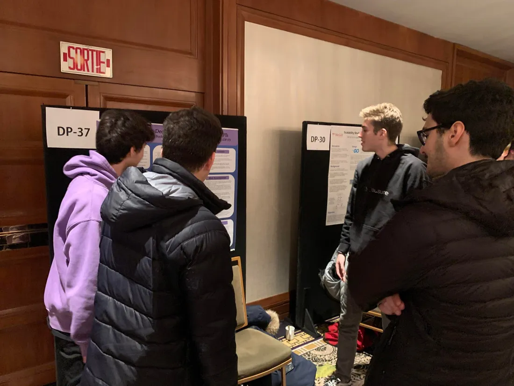

NFT Locker
A decentralized NFT-locking application that lets people keep their digital assets secure: users sign in with an Ethereum wallet and view a gallery of their NFTs through online APIs.

ProgressCompleted · ECSE 458 capstone, 2022–2023
- Proposal
- Development
- Poster
- Completed